Quantum computing

Connected clients: 0
Amplitude probabilites model
Amplitude probabilites model
| 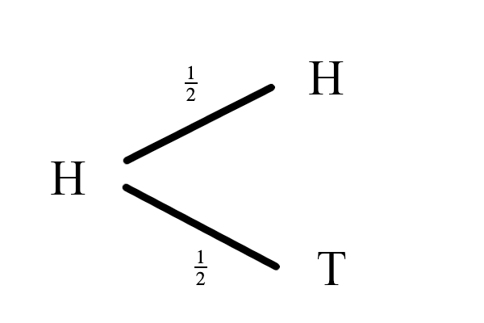 |

|
Amplitude probabilites model

|
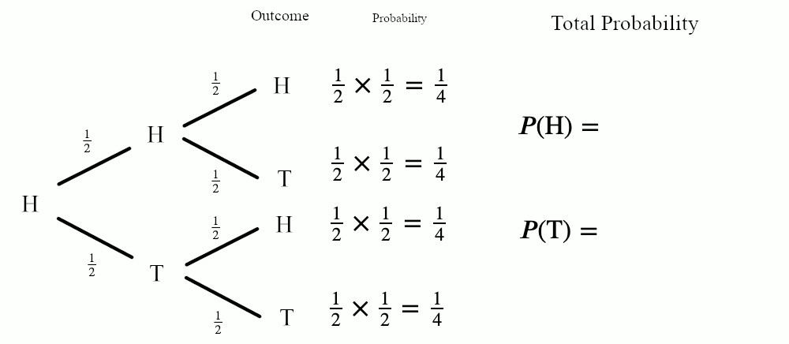 |
Amplitude probabilites model
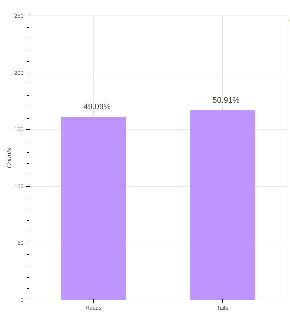
Amplitude probabilites model
| 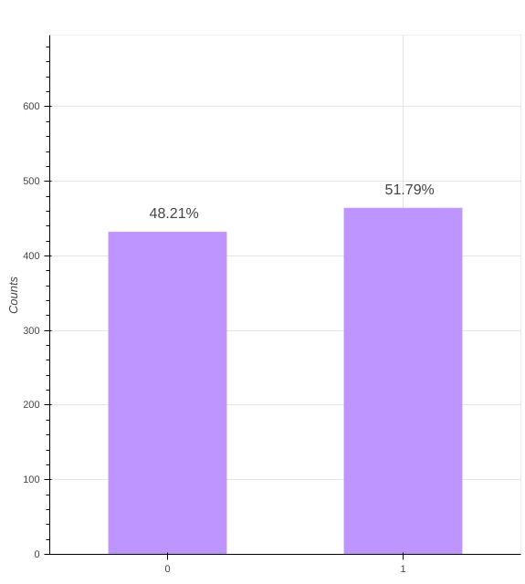 | 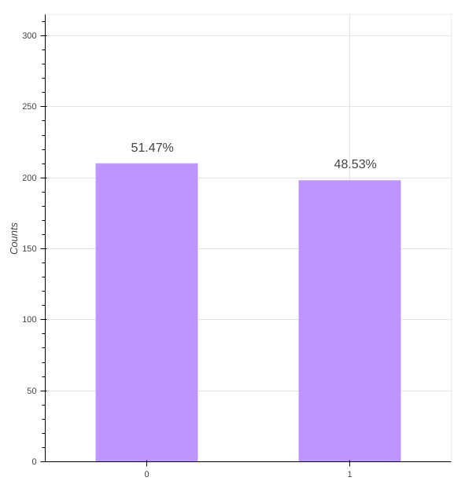 |
Amplitude probabilites model
| 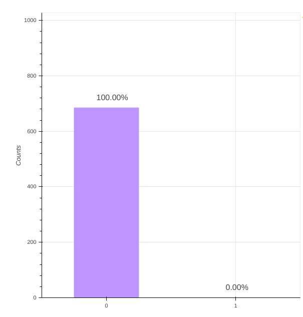 | 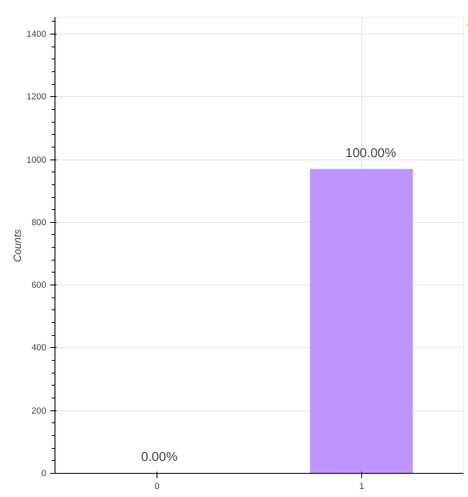 |
Amplitude probabilites model
| 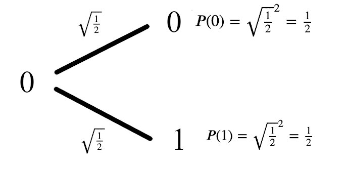 | 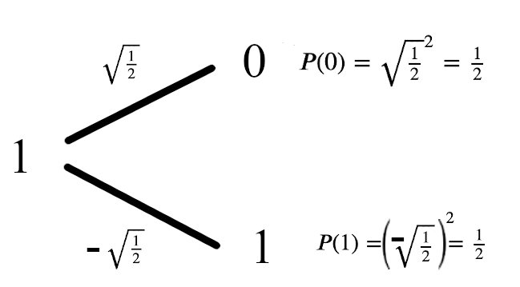 |
Amplitude probabilites model

|

|
Quantum bits
Quantum bits

- Every particle with property following laws of Quantum mechanics
- Usually realised using spin of elecron and nucleus controlled by magnetic waves
Classical vs quantum bit
Classical bit
|
Quantum bits
|

What are quantum computers?
When to use quantum computers?
- Determine global property of a function
- Solving quantum problems and simulating quantum systems
Complexity classes with quantum computers
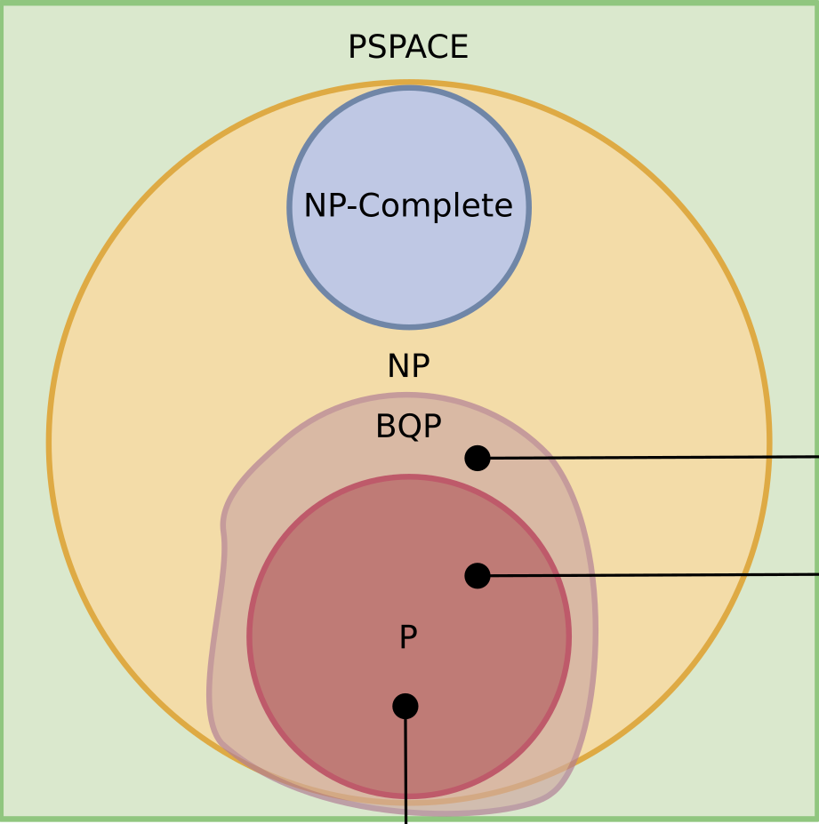Representing quantum bits
State vectors
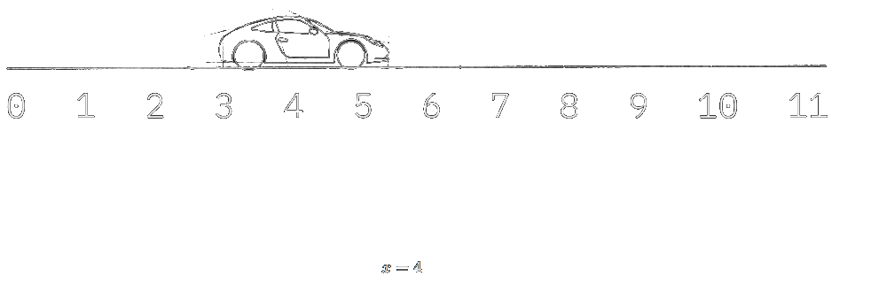State vectors
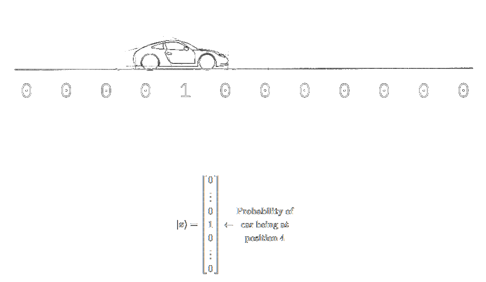Representing qbits as state vectors
| ❘q❭ = \(\begin{pmatrix}a \\\ b\end{pmatrix}, |a|^2 + |b|^2 = 1\) | ||
| ❘0❭ = \(\begin{pmatrix}1 \\\ 0\end{pmatrix}\) | ❘1❭ = \(\begin{pmatrix}0 \\\ 1\end{pmatrix}\) | ❘q❭ = \(\begin{pmatrix}\frac{1}{\sqrt{2}} \\\ \frac{1}{\sqrt{2}}\end{pmatrix}\) |
Tensor product
\(\begin{pmatrix} a \\\ b \end{pmatrix} \otimes \begin{pmatrix}c \\\ d\end{pmatrix}=\begin{pmatrix}a \cdot \begin{pmatrix} c \\\ d \end{pmatrix} \\\ b \cdot \begin{pmatrix}c \\\ d\end{pmatrix}\end{pmatrix}\)=\begin{pmatrix}ac \\\ ad \\\ bc \\\ bd \end{pmatrix}Representing multiple qbits as state vectors
\(❘q_0q_1❭ = \begin{pmatrix}a \\\ b \\\ c \\\ d\end{pmatrix}\), |a|^2 + |b|^2 + |c|^2 + |d|^2 = 1\)\(❘q_0q_1❭ = ❘q_0❭ \otimes ❘q_1❭ \)
Sum of the base states
\(❘q_0q_1❭ = \begin{pmatrix}a \\\ b \\\ c \\\ d\end{pmatrix} = a❘00❭ + b❘01❭ + c❘10❭ + d❘11❭\)
\(❘q❭ = \frac{1}{\sqrt{2}} ❘0001❭ + \frac{1}{\sqrt{2}} ❘0110❭\)
\(❘q❭ = \frac{1}{\sqrt{2^n}}\sum\limits_{x \in \{0,1\}^n}\) ❘x❭
The Bloch sphere
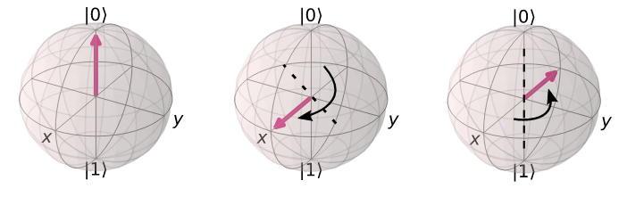Single qbit gates
Single qbit gates
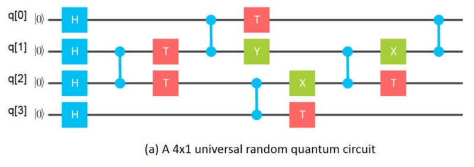- Represented as square Matrix, application using Matrix-Vector multiplication
- All operations must be reversible and deterministic
X Gate
\(X = \begin{pmatrix}0&1\\1&0\end{pmatrix}\)
\(X ❘0❭ = \begin{pmatrix}0&1\\1&0\end{pmatrix} \begin{pmatrix} 1 \\ 0 \end{pmatrix} = \begin{pmatrix} 0 \\ 1 \end{pmatrix} = ❘1❭\)
\(X ❘q❭ = \begin{pmatrix}0&1\\1&0\end{pmatrix} \begin{pmatrix} a \\ b \end{pmatrix} = \begin{pmatrix} b \\ a \end{pmatrix}\)
Hadrmand gate
\(H = \begin{pmatrix}\frac{1}{\sqrt{2}}&\frac{1}{\sqrt{2}}\\\frac{1}{\sqrt{2}}&-\frac{1}{\sqrt{2}}\end{pmatrix} = \frac{1}{\sqrt{2}} \cdot \begin{pmatrix}1&1\\1&-1\end{pmatrix}\)\(H ❘0❭ = \frac{1}{\sqrt{2}} \cdot \begin{pmatrix}1&1\\1&-1\end{pmatrix}\begin{pmatrix} 1 \\ 0 \end{pmatrix} = \begin{pmatrix} \frac{1}{\sqrt{2}} \\ \frac{1}{\sqrt{2}} \end{pmatrix} = ❘+❭\)
\(H ❘1❭ = \frac{1}{\sqrt{2}} \cdot \begin{pmatrix}1&1\\1&-1\end{pmatrix}\begin{pmatrix} 0 \\ 1 \end{pmatrix} = \begin{pmatrix} \frac{1}{\sqrt{2}} \\ - \frac{1}{\sqrt{2}} \end{pmatrix} = ❘-❭\)
Qbit measurement
Multiple qbit gates and quantum entaglement
CX Gate
\(CX = \begin{pmatrix}1&0&0&0\\0&0&0&1\\0&0&1&0\\0&1&0&0\end{pmatrix}\)
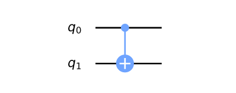
CX Gate
\( CX ❘q❭ = \begin{pmatrix}1&0&0&0\\0&0&0&1\\0&0&1&0\\0&1&0&0\end{pmatrix}\begin{pmatrix}a\\b\\c\\d\end{pmatrix} = \begin{pmatrix}a\\d\\c\\b\end{pmatrix}\)
Quantum entaglement
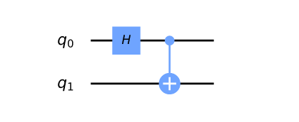\( CX ❘0+❭ =\begin{pmatrix}1&0&0&0\\0&0&0&1\\0&0&1&0\\0&1&0&0\end{pmatrix} \cdot \frac{1}{\sqrt{2}} \begin{pmatrix}1\\1\\0\\0\end{pmatrix} = \frac{1}{\sqrt{2}} \begin{pmatrix}1\\0\\0\\1\end{pmatrix}\)
Quantum teleportation
Deutsch josza problem
Problem statement
We are given a hidden Boolean function \(f\) , which takes as input a string of bits, and returns either 0 or 1 ,
that is:
\(f({x_0,x_1,x_2,...}) \rightarrow 0 / 1\), where \(x_n\) is 0 or 1.
It is guaranteed that \(f\) is either balanced or constant. Our task is to determine whether the given function is
balanced or constant.
Classical solution
We are trying different \(x\) as inputs of \(f(x)\) untli we get different reults (\(f\) is ballanced) or until we try more than half of the inputs (\(f\) is constant).
- Bestcase: 2 calls of \(f(x)\)
- Worstcase: \(2^{n-1} + 1\) calls of \(f(x)\)
- Average/Expected case: \(\mathcal{O}(2^n)\) calls of \(f(x)\)
Quantum solution
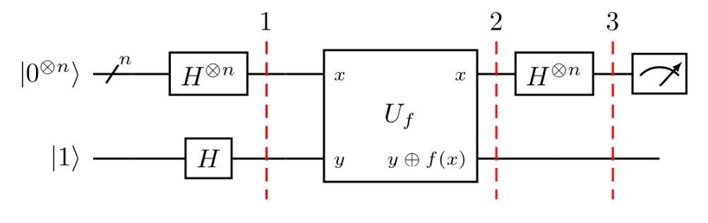
If result is ❘000...0❭ than \(f(x)\) is constant else \(f(x)\) is balanced
Quantum solution - step by step
1. Init first \(n\) qubits as ❘0❭ and last one qbit as ❘1❭ and apply H gate to the all of them.
\( ❘q_1❭ = \frac{1}{\sqrt{2^{n+1}}} \cdot \sum\limits_{x = 0}^{2^{n - 1}}❘x❭(❘0❭ - ❘1❭) = \frac{1}{\sqrt{2^{n + 1}}} \begin{pmatrix}1\\ \dots \\ 1 \\ -1 \\ \dots \\ -1 \end{pmatrix} \)
Quantum solution - step by step
2. Apply \(f(x)\) to the qbits. Some math magic happens and following is true:
- If \(f(x)\) is 0-constant, qbits will be unchanged (❘\(q_1\)❭ = ❘\(q_2\)❭)
- If \(f(x)\) is 1-constant, all states will ahve different sign (❘\(q_1\)❭ = -❘\(q_2\)❭)
- If \(f(x)\) is ballanced, exactly one half of states in the statevector have diffenrent sign
Quantum solution - step by step
3. Apply H gate to first n qbits and measure.
If \(f(x)\) is constant 0:
\(f(x)\) does not affect any qbit -> circuit on each qbit is equivalent to circuit that applyes 2 H gates, so we get same result as at the start ( ❘00..0❭)
Quantum solution - step by step
If \(f(x)\) is constant 1:
❘q_3❭ = -❘q_2❭. H❘q_3❭ = -H❘q_2❭. In case of constant 0, we showed that H❘q_2❭ = ❘0❭, so H❘q_3❭ = -❘0❭
Quantum solution - step by step
If \(f(x)\) is constant 1:
❘q_3❭ has exactly one half of the states with negative sign -> \(❘q_3❭ \cdot ❘q_2❭ = 0\), so ❘q_3❭ is orthogonal to ❘q_2❭. That means that H❘q_3❭ is orthogonal to H❘q_2❭ = ❘0❭, so the probability of measuring ❘0❭ is 0.